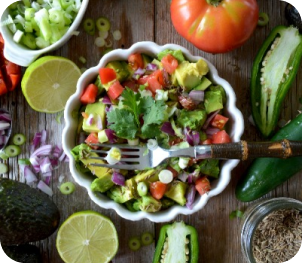
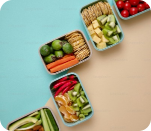
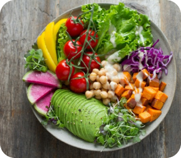
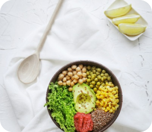
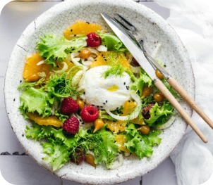

Dalam perjalanan kita menuju kesehatan dan kebugaran, makanan yang kita konsumsi memainkan peran penting. Tidak hanya bahan bakar kegiatan sehari-hari kita, tetapi juga memiliki kekuatan untuk meningkatkan suasana hati kita, meningkatkan kejernihan mental kita, dan mencegah segudang masalah kesehatan. Panduan ini adalah pintu gerbang Anda untuk memahami dan merangkul kebiasaan makan sehat yang berkelanjutan dan memuaskan.
Mengapa Memilih Makanan Sehat?
Makanan sehat adalah landasan gaya hidup yang dinamis. Mereka dikemas dengan nutrisi penting, vitamin, dan mineral yang dibutuhkan tubuh kita untuk berfungsi secara optimal. Dengan memilih makanan sehat daripada pilihan olahan, Anda berinvestasi dalam kesehatan dan kesejahteraan jangka panjang Anda.
Tips Terbaik untuk Memilih Makanan Sehat
Memilih makanan sehat adalah langkah penting dalam menjaga kesehatan dan kesejahteraan kita. Salah satu prinsip utama adalah memilih makanan segar yang minim diproses, seperti buah, sayuran, dan biji-bijian utuh. Penting juga untuk memperhatikan keseimbangan gizi, dengan memilih makanan yang mengandung karbohidrat kompleks, protein, lemak sehat, serat, serta vitamin dan mineral yang cukup. Perhatikan juga label makanan untuk memeriksa kandungan nutrisi dan bahan tambahan yang digunakan. Hindari makanan tinggi gula tambahan dan garam berlebih, serta batasi konsumsi lemak jenuh dan trans. Pilih sumber protein yang sehat, seperti daging tanpa lemak, ikan, kacang-kacangan, dan produk susu rendah lemak. Penting juga untuk memperhatikan ukuran porsi dan menghindari makan berlebihan. Minum banyak air untuk menjaga hidrasi tubuh. Variasi dalam konsumsi makanan juga penting, sehingga tubuh mendapatkan nutrisi yang beragam. Hindari makanan cepat saji dan makan dengan kesadaran penuh, tanpa sambil melakukan aktivitas lain. Rencanakan menu makanan sehat Anda untuk membantu Anda tetap berkomitmen pada gaya hidup yang sehat secara keseluruhan. Dengan mengikuti tips-tips ini, kita dapat membuat pilihan makanan yang lebih sehat untuk mendukung kesehatan dan kesejahteraan kita.
Menerapkan Gaya Hidup Sehat
Transisi ke pola makan yang lebih sehat tidak harus menjadi tugas yang sulit. Mulailah dari hal kecil dengan membuat satu atau dua perubahan sekaligus, dan secara bertahap, ini akan menjadi bagian dari rutinitas harian Anda. Ingat, makan sehat adalah soal keseimbangan dan menikmati beragam makanan yang menyehatkan tubuh dan jiwa.
Kami harap panduan ini menginspirasi Anda untuk membuat pilihan yang bijaksana dan menjelajahi dunia makanan sehat yang menakjubkan. Tubuh Anda berhak mendapatkan bahan bakar terbaik. Saatnya untuk mulai memberinya nutrisi dengan benar.
Sehat itu Mahal
Yuk, mulai hari ini kita berkomitmen untuk memberi tubuh kita makanan yang sehat dan bernutrisi!